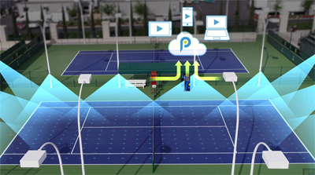
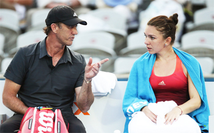
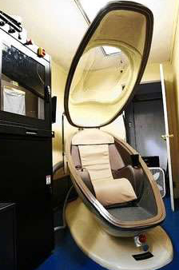

← Bài trước: Future Trends in Tennis - Part 2 | 🏠 Classic Lessons Trang chủ | Bài tiếp: → Grip Pressure
Xu hướng tương lai của quần vợt phần 3
Thư viện kiến thức quần vợt thống nhất — Cơ bản, Phân tích kỹ thuật, Thư viện tham khảo và nhiều hơn nữa
Xu hướng tương lai của quần vợt: Phần 3
Chris Lewit
Trong bài viết trước, tôi đã thảo luận về khái niệm về những gì tôi gọi là "người chơi hai tay" (ambiplayers) và những cú đánh của họ có thể trông như thế nào hiện tại và trong tương lai. (Nhấn vào đây.) Bây giờ, hãy chuyển sang vấn đề về những tiến bộ trong công nghệ ở một số lĩnh vực, bắt đầu với những sân quần vợt thông minh.

Kết thúc việc gian lận?
Do sự phổ biến ngày càng tăng và giảm giá của các hệ thống gọi đường điện tử như Playsight và Hawkeye, việc gian lận có thể cuối cùng sẽ bị loại bỏ khỏi trò chơi ở tất cả các cấp độ. Điều này sẽ đặc biệt quan trọng đối với sự phát triển và phổ biến của mạch thi đấu trẻ, hiện đang có sự gian lận rầm rộ.
Ở tất cả các cấp độ thi đấu, việc gọi đường điện tử và hỗ trợ bởi máy tính có thể cuối cùng sẽ thay thế tất cả con người, bao gồm cả trọng tài và người gọi đường. Đầu tiên là người gọi đường sẽ bị loại bỏ, sau đó—sau đó—các trọng tài cũng vậy.

Huấn luyện viên sân chơi có trở thành phổ biến và thậm chí còn tiến bộ hơn không?
Các hệ thống sân quần vợt thông minh có thể loại bỏ việc gian lận cho người chơi giải trí. Nó có thể trở nên hiếm khi chơi trên một sân "không thông minh", vì hầu hết các sân ở mọi nơi có thể được trang bị với các cảm biến thông minh và máy ảnh cho phép thi đấu công bằng hơn. Đây chỉ là một phần của xu hướng lớn được gọi là "Internet of Things," một hiện tượng mà các thiết bị hàng ngày thông thường đang trở nên thông minh hơn và được kết nối để cho phép kết nối dữ liệu.
Huấn luyện viên sân chơi
Huấn luyện viên sân chơi đã được tranh luận trong nhiều năm trong cộng đồng quần vợt, nhưng cuộc tranh luận có thể kết thúc khi nó trở nên ngày càng được chấp nhận. Huấn luyện viên sân chơi đã trở nên ngày càng phổ biến ở nhiều cấp độ của trò chơi, từ WTA Tour đến các mạch trẻ mới như Global Junior Tour và ITF Junior Circuit, đã phê duyệt huấn luyện viên sân chơi cho lịch trình giải đấu năm 2018.

Các phòng hyperbaric được sử dụng bởi các tay vợt như Novak Djokovic để tăng cường phục hồi.
Nhưng có thể huấn luyện viên sân chơi trở thành "ảo" bằng cách sử dụng công nghệ đơn giản như điện thoại di động trong thời gian thay người không? Huấn luyện viên có thể giao tiếp với tay vợt ngay cả khi họ đang xem từ xa.
Làm thế nào về việc giao tiếp trực tiếp giữa tay vợt và huấn luyện viên trong các trận đấu với tay vợt được kết nối với tai nghe giống như NFL cho phép huấn luyện viên nói trực tiếp với những người chơi với tai nghe trong mũ bảo hiểm?
Phục hồi
Làm thế nào về công nghệ phục hồi?
Novak Djokovic được biết đến với việc sử dụng một phòng hyperbaric gây tranh cãi gọi là CVAC để tăng cường phục hồi của mình. Một CVAC sử dụng một van được điều khiển bởi máy tính và một máy bơm hút để mô phỏng độ cao và nén cơ bắp theo các khoảng thời gian nhịp điệu.
Công ty tuyên bố rằng việc dành từ 20 phút trong phòng ba lần một tuần có thể cải thiện hiệu suất thể thao bằng cách cải thiện tuần hoàn, tăng số lượng tế bào máu đỏ giàu oxy, loại bỏ axit lactic và có thể thậm chí kích thích sản xuất tế bào gốc.
Nhưng liệu có công bằng khi Djokovic có thể chi trả cho các liệu pháp trong thiết bị trị giá 75.000 đô la này trong khi những người khác không thể không? Điều này có được xem là một lợi thế bất hợp pháp không?
Các thiết bị giả có thể mang lại hiệu suất tốt hơn các chi thể tự nhiên không?
Kỹ thuật
Một vấn đề khác. Kỹ thuật tổng quát và những tiến bộ trong lĩnh vực dược lý và tăng cường cơ thể bằng máy có thể cải thiện đáng kể. Những tiến bộ này cũng sẽ gây ra nhiều câu hỏi về những gì là chơi công bằng và những gì là hợp pháp.
Để lấy một ví dụ, nếu một người tàn tật sử dụng một chi giả mang lại hiệu suất tốt hơn chi tự nhiên, liệu có công bằng để cho phép người chơi đó thi đấu với những người chơi không được tăng cường không?
Làm thế nào khi kỹ thuật di truyền cho phép tùy chỉnh tăng cường các đặc tính thể thao trước hoặc sau khi sinh? Liệu có công bằng để cho phép một vận động viên được sửa đổi di truyền thi đấu với những vận động viên không được sửa đổi không?
Công nghệ video
Phân tích video tốc độ cao đã biến đổi phân tích kỹ thuật và sự hiểu biết về trò chơi ở tất cả các cấp độ bằng cách cho phép chúng ta nhìn thấy các khoảnh khắc quan trọng trong các cú đánh mà mắt thường không thể nhìn thấy. Công việc của những người tiên phong như John Yandell và Brian Gordon đã bẻ gãy những huyền thoại và mở ra một kỷ nguyên mới trong phát triển kỹ thuật. Bạn có thể tìm thấy nhiều bài viết rộng rãi trên Tennisplayer từ John (Nhấn vào đây) và từ Brian (Nhấn vào đây).
Những xu hướng này sẽ tiếp tục không bị gián đoạn và các huấn luyện viên sẽ trở nên giáo dục và có kiến thức hơn về động học và thiết kế cú đánh. Ví dụ, Brian hiện đang thử nghiệm beta một hệ thống đo lường 3D mới có thể cung cấp dữ liệu định lượng chính xác mà không cần gắn các đánh dấu vào tay vợt, làm cho việc đo lường các cú đánh trong thực chiến trở nên có thể.
Tốc độ cao cho phép chúng ta nhìn thấy các vị trí quan trọng trong các cú đánh mà mắt thường không thể nhìn thấy.
Gắn thẻ
Một xu hướng ít được biết đến là sử dụng công nghệ gắn thẻ video và phân tích thống kê kết quả để phát hiện các mẫu chiến thuật và xây dựng hồ sơ của các tay vợt. Đã xảy ra một sự bùng nổ về sức mạnh của việc thu thập và phân tích dữ liệu lớn và nó đã trở thành một yếu tố đối với các đối thủ hàng đầu trên các mạch chuyên nghiệp.
Ví dụ, hiện tại một số tay vợt hàng đầu được cho là đang mua quyền sở hữu dữ liệu thống kê của họ về các mẫu và chiến lược với số tiền hàng trăm nghìn đô la. Đây là một thế giới mới trên mạch và sức mạnh của phân tích có thể tiếp tục định hình mạch theo những cách không thể dự đoán được trong tương lai.
Đối với các huấn luyện viên, phân tích sẽ được sử dụng nhiều hơn trong việc làm việc với tay vợt và giúp họ khám phá các mẫu chơi tốt nhất của mình trên sân tập và tại các giải đấu. Tennis Analytics do Warren Pretorius đứng đầu là người dẫn đầu trong lĩnh vực này (Nhấn vào đây), và tôi biết John đang lên kế hoạch một loạt các bài viết trong tương lai trên Tennisplayer về cách hoạt động của gắn thẻ trận đấu và tiềm năng của nó.
Nhưng lại một lần nữa, nó nảy sinh vấn đề về ai có thể chi trả được gì và liệu phân tích có tạo ra lợi thế bất công không?
Thực tế ảo
Mặc dù phân tích video và hướng dẫn trực tuyến đã nổ ra trong thập kỷ qua, công nghệ vẫn chưa tồn tại để làm cho huấn luyện viên ảo trở thành hiện thực.
Nhưng khi công nghệ thực tế ảo cải thiện, có thể các huấn luyện viên không cần phải rời khỏi nhà hoặc văn phòng để làm việc với tay vợt. Các huấn luyện viên có thể không cần một sân quần vợt hoặc vợt, và có thể không cần phải đi du lịch nhiều như trước đây.
Những lợi ích đào tạo tiềm năng từ việc sử dụng thực tế ảo trong tương lai là gì?
Thực tế ảo có tiềm năng biến đổi huấn luyện viên từ xa, có thể trong cuộc sống của chúng ta, đến mức một huấn luyện viên và tay vợt có thể có một bài học trong một thế giới ảo và nó sẽ thật sự và hiệu quả như nếu họ đang đánh và nói tại câu lạc bộ. Đối với các huấn luyện viên đang làm việc 30 tuần một năm trên các mạch chuyên nghiệp hoặc trẻ, công nghệ này có thể cho phép họ cung cấp hỗ trợ rất gần gũi cho tay vợt của mình mà không cần phải đi cùng họ trên đường.
Các huấn luyện viên hàng đầu cũng sẽ có thể chia sẻ kiến thức của mình một cách hiệu quả và hiệu quả hơn với nhiều tay vợt trên toàn thế giới và với mức giá thấp hơn thay vì bị giới hạn bởi địa lý và thời gian.
Tương lai của giáo dục huấn luyện viên là sáng tạo, vì lý do tương tự. Các huấn luyện viên sẽ có thể truy cập kiến thức, chia sẻ thông tin và cộng tác theo những cách chưa từng có và điều này sẽ nâng cao mức độ giáo dục trên toàn thế giới và cũng nâng cao mức độ mong đợi đối với các huấn luyện viên về giáo dục liên tục và cập nhật về xu hướng giảng dạy trên toàn thế giới.
Hãy tưởng tượng bạn có thể tham dự bất kỳ hội nghị nào trên thế giới hoặc học tập với huấn luyện viên huyền thoại yêu thích của bạn hoặc người hướng dẫn từ nhà của bạn. Điều đó có thể xảy ra!
Chú thích
Các dự đoán trong bài viết này được đưa ra để kích thích suy nghĩ và thảo luận. Tôi mong nhận được phản hồi và những ý tưởng khác từ cộng đồng Tennisplayer. Vui lòng chia sẻ các dự đoán của bạn trong Diễn đàn. (Nhấn vào đây.)

Chris Lewit, cựu số 1 của Cornell và tay vợt chuyên nghiệp, đã huấn luyện nhiều tay vợt trẻ hàng đầu và là một huấn luyện viên, giáo viên và tác giả hàng đầu. Ông đã viết hai cuốn sách bán chạy nhất, The Secrets of Spanish Tennis và The Tennis Technique Bible.
Chris tổ chức một trại huấn luyện quần vợt hiệu suất cao phổ biến ở những ngọn núi đẹp của Vermont và huấn luyện tay vợt trên toàn thế giới thông qua trường học ảo của mình, CLTA Online (CLTA.teachable.com).
Chris cũng sản xuất một chương trình truyền hình và podcast huấn luyện viên quần vợt hiệu suất cao hàng tuần, The Prodigy Maker Show, có sẵn trên Apple Podcasts và tất cả các thư mục podcast khác. Tất cả các chương trình có thể được truy cập tại ProdigyMaker.com.
Hãy xem blog của Chris, cũng tại ProdigyMaker.com để có các bài viết miễn phí về phát triển hiệu suất trẻ và đào tạo Tây Ban Nha. Học về trại của anh ấy tại ChrisLewit.com hoặc truy cập học viện trực tuyến tại CLTA.teachable.com
Nguồn: tennisplayer.net lưu trữ — Xu hướng tương lai của quần vợt - Phần 3.docx (Thư viện giảng dạy của John Yandell, 2002-2022). Được trích xuất và hiển thị dưới dạng HTML cho Tennis Future Lab.